01 // MODULE
01 // Vision Sensor Array
High-speed optical frame capture, lens correction, and joint vector extraction across a 110° wide-angle workstation field of view.
ESP32-S3 powered edge-vision and inertial telemetry system engineered to eliminate workplace spinal degradation.
CNC-milled from a solid billet of aerospace aluminium with micro-chamfered light-catching edges.
Zero-distortion optical glass engineered for continuous sub-millimeter cervical and thoracic vector extraction across variable ambient lighting.
Custom ENIG 4-layer circuit architecture housing the dual-core ESP32-S3 neural engine. Executes trigonometric kinematics in under 15ms with zero cloud egress.
High-mass acoustic foundation tuned to resonate dual-frequency 440 Hz and 740 Hz piezo alerts.
Sandy is an edge-vision biomechanics instrument engineered for precision and designed to belong on your workstation.
Drawing from bespoke mechanical keyboard architecture, its form balances warm C360 brass and anodised 6061 aluminium in quiet contrast.
Every surface is milled to 0.02mm tolerance for zero resonance distortion.
Precision-milled 6061 aluminium unibody, immersion gold optical PCB, and high-density C360 brass acoustic ballast.
CNC milled aerospace unibody casing with bead-blasted chamfered perimeter and ST7789 display aperture.
Sub-millimeter refraction lens array providing high-speed optical frame capture and joint vector extraction.
ENIG immersion gold circuit board running low-latency vector angle calculation with zero cloud dependency.
MEMS accelerometer and gyroscope fusion array for sub-degree real-time posture drift logging.
Laser-engraved architectural brass acoustic ballast dampening resonance for 740 Hz piezo biofeedback tones.
Continuous closed-loop biomechanical telemetry tracking human spine kinematics in real time.
High-speed optical frame capture, lens correction, and joint vector extraction across a 110° wide-angle workstation field of view.
Low-latency angle calculation (-90° to +90°) with strict fixed-bone structural constraints.
6-axis IMU sensor fusion and real-time posture drift logging.
Dual-frequency piezo acoustic tones and live ST7789 HUD telemetry streaming with instant cyberpsychosis threshold alerts.
Every subsystem is purpose-built for continuous 14 KHz optical scanning, tactile physical presence, and zero-latency biofeedback.
Featuring a 14 KHz optical matrix scan rate and 8 KHz IMU polling, expect near-instant response times and sub-degree spinal vector registration straight from the hardware datum.
Milled from 6061 aluminium and paired with a C360 brass weight for rigidity, heft, and acoustic clarity.
Decoupled elastomer base ring eliminates desk vibration transfer into the 6-axis MEMS inertial array.
Simultaneously tracks cranium, cervical pivot, shoulder datum, thoracic spine, lumbar anchor, and forearm reach with invariant bone-length trigonometry.
All optical frames are processed inside volatile ESP32-S3 SRAM and discarded within 15ms. Zero cloud uploads, zero external accounts required.
Each unit arrives factory-calibrated on an optical collimator bench, delivering clinical-grade angle accuracy without manual setup or tuning.
Explore real-time vector kinematics, bidirectional -90° to +90° stage evaluation, 740 Hz acoustic biofeedback waveform, and instant cyberpsychosis shockwave triggers.
Zero bone-stretch trigonometric solver across reclined, upright, caution, and severe slouch zones.
Instantaneous concentric shockwaves, torso jitter, and 740 Hz acoustic biofeedback alert.
Hardware benchmark metrics and mechanical tolerances for Sandy.
| MCU Architecture | ESP32-S3 Dual-Core Xtensa LX7 |
|---|---|
| Frame Latency | < 15ms |
| Sensor Polling Rate | Up to 8 KHz (IMU) |
| Sensor Scan Rate | Up to 14 KHz (Optical Matrix) |
| Sampling Frequency | 60 Hz |
| Range of Motion | -90° to +90° |
| Optimal Angle | 6 Degrees Baseline |
| Chassis Materials | 6061 Anodised Aluminium / C360 Brass / Frosted Acrylic |
| Power Draw | 1.2W Peak |
| Founder Price | $229 USD (MSRP $279) |
See where Sandy is at right now from kinematic formulation to global fulfillment.
Trigonometric bone constraint formulation, fixed-link kinematic proofs, and Kalman IMU filtering algorithm design.
CNC 6061 aluminium tooling, custom PCB fabrication, and optical bench calibration.
Latency benchmarking (<15ms) and ST7789 SPI HUD biofeedback telemetry validation.
Tooling optimization for C360 brass ballast weight, sapphire lens gasket tolerances, and acoustic resonance cavity tuning.
250-unit golden sample pilot production and automated QA environmental stress cycling.
Direct air-freight fulfillment to regional vendor hubs across US, EU, and Asia-Pacific.
Sandy deployed across professional engineering, design, and creator environments.


Comprehensive technical and logistical documentation for Sandy.
Reversing workplace spinal degradation through heirloom-grade industrial hardware and edge kinematics.
Sandy emerged from a relentless drive to reverse the chronic spinal degeneration endemic to modern engineering and knowledge workstations. Traditional wearables suffer from sensor drift, constant skin contact irritation, and unreliable battery lifespans. We designed an optical and inertial fusion array that perceives spinal posture continuously from the workstation datum.
By shifting computational load entirely onto the ESP32-S3 microcontroller, Sandy guarantees absolute biometric sovereignty with sub-15ms biofeedback latency.
Our goal is uncompromising: deliver medical-grade posture alignment telemetry inside an authentic 6061 aluminium and C360 brass industrial enclosure.
Multidisciplinary engineers fusing embedded hardware, computer vision, and clinical biomechanics.
Architect of the CNC 6061 aluminium unibody enclosure, sapphire optical mount, and C360 solid brass acoustic ballast assembly.
Designer of the sub-15ms edge optical inference pipeline and fixed-bone kinematic constraint engine.
Firmware developer for ESP32-S3 dual-core telemetry synchronization and ST7789 SPI driver matrix.
Ergonomics researcher standardizing -90° to +90° cervical strain and cyberpsychosis threshold limits across clinical trials.
Includes CNC 6061 aluminium chassis, C360 solid brass weight, optical lens module, USB-C braided cable, and lifetime edge firmware upgrades.
Individually serialized C360 brass weight plate with laser-etched founder number.
Localized customs clearance and regional proxy fulfillment across NA, EU, UK, Asia, and AU.
Regional distribution partners handling localized customs, duties, and expedited fulfillment.

Register new workstation telemetry profile.
Already hold active credentials? Access Terminal
Authenticate to resume real-time posture stream.
Unregistered workstation? Establish Credentials